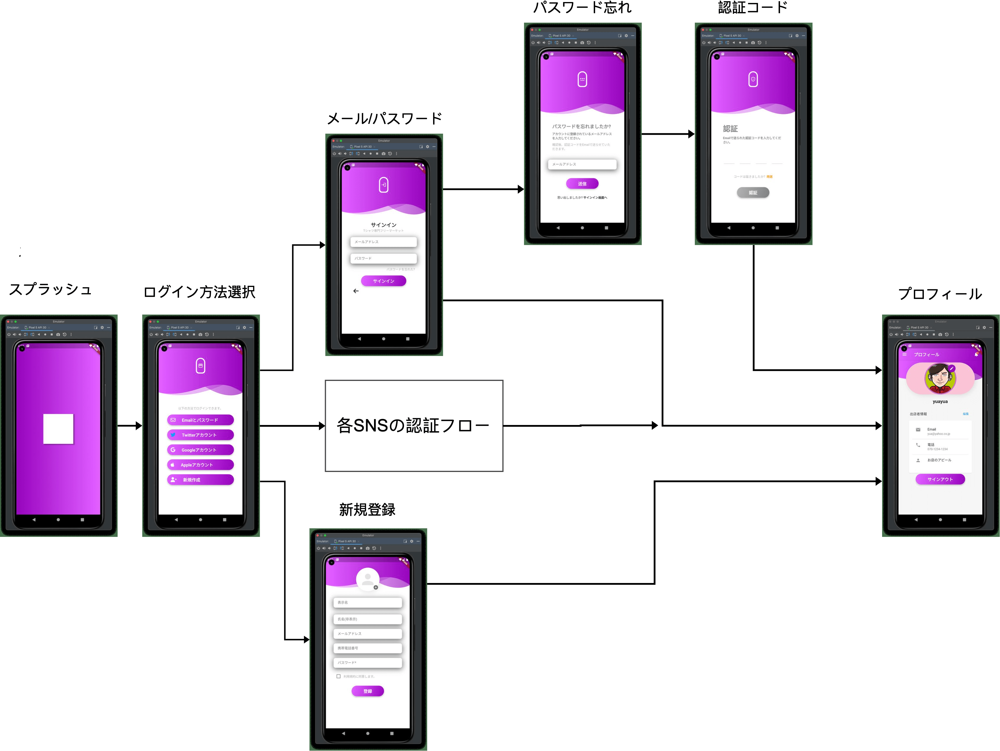
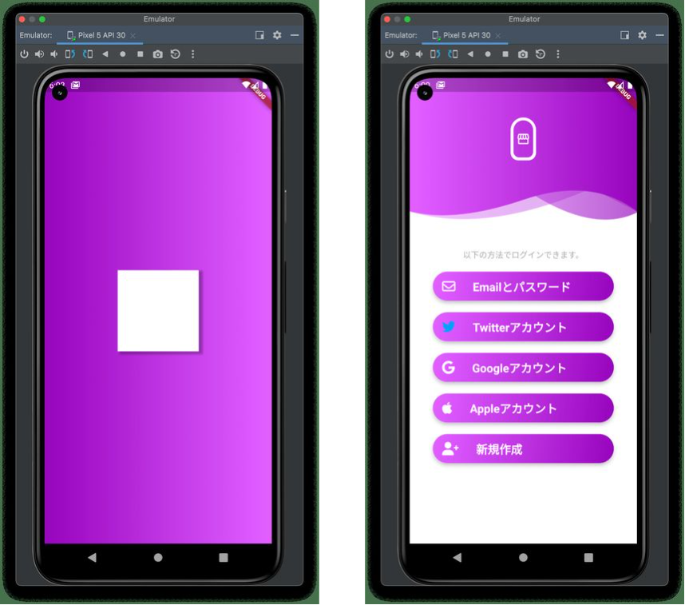
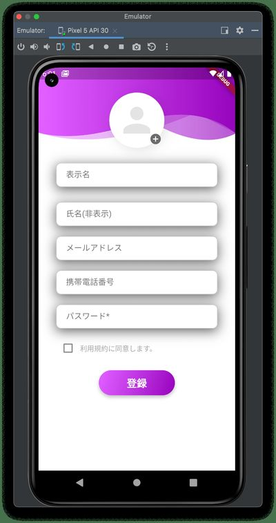
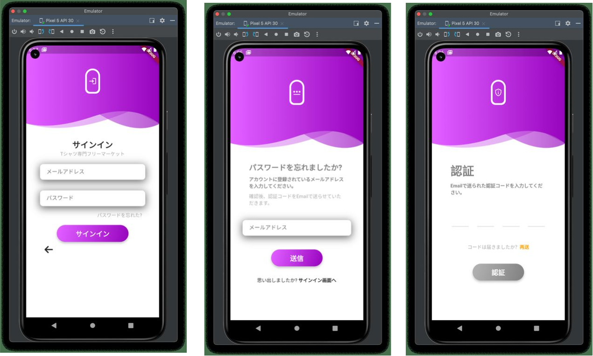
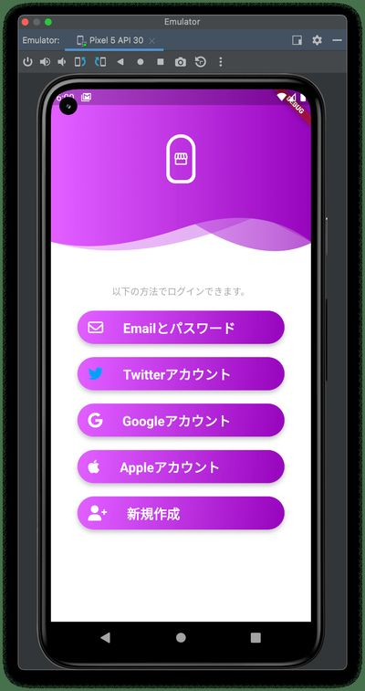
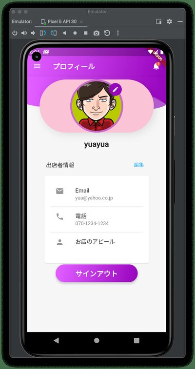

第3章
アプリケーション認証
オンライン・フリーマーケットの認証部分を作成します。
認証フローにある画面の作成と認証コードを作成します。
3.1 認証フロー
下図のように認証を行います。

図3.1:
3.1.1 スプラッシュスクリーンからログイン選択
アプリを起動後初期化し、ログイン選択画面を表示します。
サインイン方法は、
- メール/パスワード 新規登録後に利用可能
- Twitterアカウント
- Googleアカウント
- AppleID
が選択できます。
「メール/パスワード」でのサインインは、新規登録を行うことで有効になります。

図3.2:
3.1.2 新規登録
メールアドレス、パスワードなど必要な情報を入力しアカウントを作成します。作成後は、プロフィール画面が表示されます。
アバターの画像は、初回ランダムに選択しています。プロフィール画面で編集することができます。

図3.3:
3.1.3 メール/パスワード
新規登録が完了すると次回からはメール/パスワードデサインインすることができます。パスワードを忘れた場合の復旧方法は、メールアドレス入力後、送られて来た認証コードを入力することで復旧します。

図3.4: desc
3.1.4 SNS認証
本書では、
- Apple
のアカウントを使用してのサインインを実装します。
Twitter、Appleに関しては双方ともDeveloperアカウントが必要になります。Twitterは無償でDeveloperアカウント登録できますが、Appleデベロッパーアカウントは有料となります。
どちらもDeveloperアカウントでログインし、キーの取得などが必要ですがすべて図解しています。

図3.5:
3.1.5 プロフィール画面
認証完了後は、どのページに飛ばすことも可能ですが、認証フロー確認のためプロフィール画面を表示します。
アバターの画像は、新規登録の場合、事前に保存してある画像からランダムに選択しています。SNS認証の場合は、SNSに登録してあれば優先されます。

図3.6:
それでは、実装していきましょう。